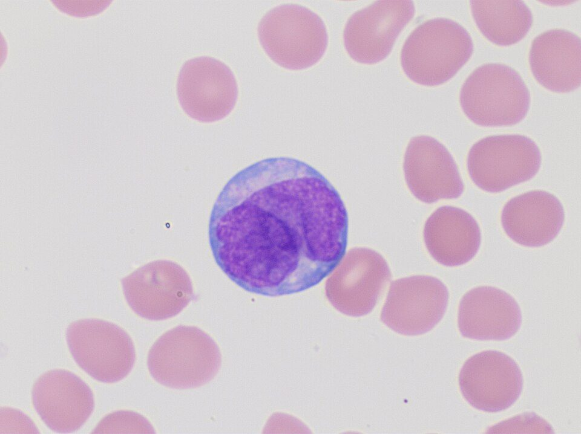

General information only. It does not replace advice from your care team and should not be used to choose a treatment.

.jpg){kind=link}
At a glance
| How common | 490,000 cases a year worldwide; about 10,000 in the UK |
| Main types | Acute lymphoblastic (ALL), acute myeloid (AML), chronic lymphocytic (CLL), chronic myeloid (CML) |
| Who | ALL: mainly children; AML and CLL: older people; CML: middle-aged adults |
| Symptoms | Tiredness, pallor, infections, bruising and bleeding, fever, swollen glands |
| Diagnosis | Blood tests and bone marrow with genetic testing |
| Treatment | Chemotherapy, targeted therapy, stem cell transplant, CAR-T, bispecific antibodies |
What they are
The bone marrow makes billions of red cells, white cells and platelets every day. In leukaemia, a blood stem cell accumulates mutations and produces immature or abnormal cells that crowd out normal ones.
| Acute | Chronic | |
|---|---|---|
| Cells | Immature (blasts) | More mature |
| Course | Weeks; urgent | Months or years |
| Lymphoid | ALL | CLL |
| Myeloid | AML, promyelocytic | CML |
Others: hairy cell leukaemia, chronic and juvenile myelomonocytic leukaemia, large granular lymphocyte leukaemia, and the related myelodysplastic syndromes and myeloproliferative neoplasms.
Risk factors
Most have no known cause. Some factors: ionising radiation (atomic bombs, radiotherapy), benzene, tobacco (AML), previous chemotherapy, Down syndrome, Fanconi anaemia and other inherited predispositions, HTLV-1 virus (adult T-cell leukaemia).
Symptoms
- Anaemia: tiredness, pallor, breathlessness.
- Low platelets: unexplained bruises, tiny red spots on the skin (petechiae), bleeding gums or nose.
- Faulty white cells: repeated infections, fever.
- Bone pain, swollen glands, enlarged spleen, night sweats, weight loss.
- Chronic forms are often found on a routine blood test without symptoms.
Diagnosis
- Full blood count and blood film.
- Bone marrow aspirate and biopsy.
- Flow cytometry to identify the cell type.
- Cytogenetics and molecular testing (Philadelphia chromosome, FLT3, NPM1, IDH, TP53...), which define prognosis and treatment.
- Lumbar puncture in ALL.
Treatment
It depends on the type and is explained in each sheet. The main tools are:
- Induction chemotherapy to achieve remission, and consolidation.
- Targeted therapy: imatinib and other BCR-ABL inhibitors (CML), BTK inhibitors and venetoclax (CLL), FLT3, IDH or menin inhibitors (AML), all-trans retinoic acid and arsenic (promyelocytic).
- Immunotherapy: blinatumomab, inotuzumab, CAR-T cells.
- Allogeneic stem cell transplant, from a related, unrelated (registries such as Anthony Nolan and DKMS) or haploidentical donor.
- Support: transfusions, infection prevention, growth factors.
Outlook
It has improved greatly, though unevenly by type and age: childhood ALL is cured in 90%, promyelocytic in over 90%, and people with CML have near-normal life expectancy. AML in older people remains the big challenge.
Donating stem cells
Joining a stem cell donor register (in the UK, Anthony Nolan for ages 16-30 or DKMS for 17-55) can save the life of someone without a matched family donor.
See also: Lymphomas, Multiple myeloma, Stem cell transplant and CAR-T, Childhood cancer.
History · Medicapedia
Leukaemias in the history of medicine
How it was discovered, who studied it and how its treatment changed over the centuries, told on Medicapedia, our sister site on the history of medicine.
Read the history on Medicapedia ↗Sources
- Khoury JD, et al. The 5th edition of the World Health Organization Classification of Haematolymphoid Tumours: Myeloid and Histiocytic/Dendritic Neoplasms. Leukemia. 2022;36:1703-1719.
- Döhner H, et al. Diagnosis and management of AML in adults: 2022 recommendations from an international expert panel on behalf of the ELN. Blood. 2022;140:1345-1377. doi:10.1182/blood.2022016867
- Blood Cancer UK. bloodcancer.org.uk
- Leukaemia Care. leukaemiacare.org.uk